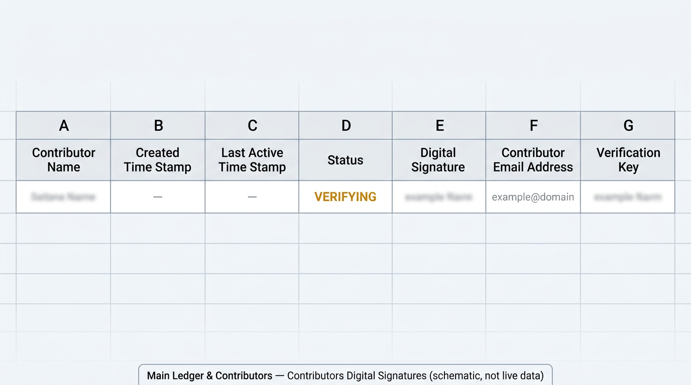
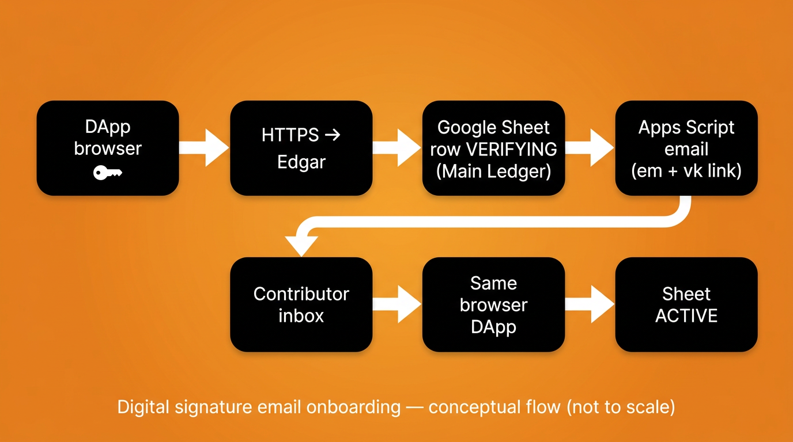
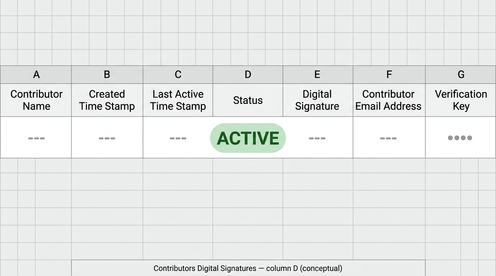
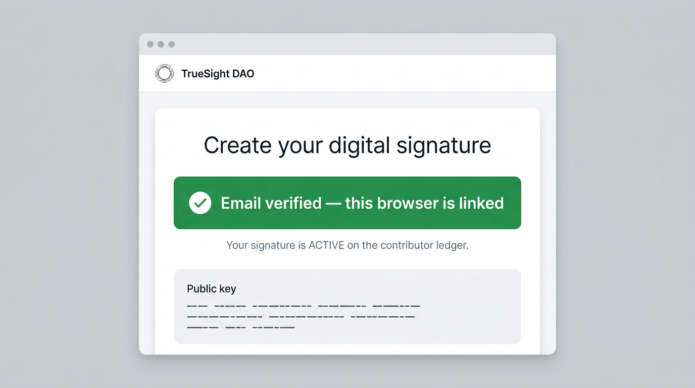

Why this protocol exists
TrueSight’s digital signatures are not cosmetic badges. They are how the contribution server (Edgar) ties a human-readable contributor record to cryptographic proof that a submission came from a specific browser-held key. Email is a practical onboarding channel, but email alone cannot prove possession of a private key — so the system uses a short-lived verification key, a Google Sheet row, and a Google Apps Script mailer. For every server-side sheet and webhook step you can read (and run in audit mode), use the single open reference demo_edgar_digital_signature_sheet_flow.py in TrueSightDAO/tokenomics — production Edgar itself is not published.
Where this lives in the live ledger
This flow is not a diagram-only idea: it writes to the same Main Ledger & Contributors Google workbook the DAO already uses for contributor records. Canonical column names and notes are in TrueSightDAO/tokenomics — SCHEMA.md.
- Workbook: Google Sheets id
1GE7PUq-UT6x2rBN-Q2ksogbWpgyuh2SaxJyG_uEK6PU— open the workbook (DAO operators need Google access). - Signatures tab: Contributors Digital Signatures — deep link to the tab where
VERIFYING/ACTIVErows land (columns A–G, header row 1). - Contact tab (name lookup): Contributors contact information — deep link; email in column D maps to display name in column A (header row 4 on that tab).
- Public web mirror: contribution history and transparency entry points on truesight.me/ledger — the Google Sheet remains the operator-facing source for raw signature rows.

End-to-end flow (DApp → contribution server → sheet → inbox → DApp → ACTIVE)
The numbered steps below are narrated in product terms; the executable sketch of the server’s sheet + mail interactions is always demo_edgar_digital_signature_sheet_flow.py (see subcommands such as append-pending, print-gas, activate-pending).

VERIFYING) → verification email (Apps Script) → same browser → ACTIVE. Diagram is conceptual, not a network topology map.- DApp (
create_signature.html): The contributor generates a key pair in the browser and prepares a signed payload that includes an[EMAIL REGISTERED EVENT]block with their email. Source: TrueSightDAO/dapp —create_signature.html; hosted page: truesightdao.github.io/dapp/create_signature.html. - Contribution server (Edgar): The payload is posted to Edgar’s HTTPS endpoint. After signature verification succeeds, the server resolves the contributor’s display name from the Contributors contact information tab (email in column D → name in column A), then maintains the Contributors Digital Signatures tab. The public, line-by-line stand-in for that server work is
demo_edgar_digital_signature_sheet_flow.py(not a hosted replacement for Edgar). VERIFYINGrow on Contributors Digital Signatures (A–G): In the signatures tab of the Main Ledger workbook, the server appends a row whose status column (D) isVERIFYING, carrying the normalized public key (E), lowercased email (F), and a random Verification Key (G). Column semantics are documented in TrueSightDAO/tokenomics —SCHEMA.mdunder Contributors Digital Signatures; the append path is exercised asappend-pendingindemo_edgar_digital_signature_sheet_flow.py.- Google Apps Script email: The server calls the standalone web app
edgar_send_email_verification.gs, which emails a link containingemandvkquery parameters so the contributor can resume in the same browser profile. The GET/POST contract is printed (and optionally invoked) viaprint-gasindemo_edgar_digital_signature_sheet_flow.py. - Verification event: The contributor opens the link, then submits a signed
[EMAIL VERIFICATION EVENT]that references the same verification key. ACTIVE: The server finds the pendingVERIFYINGrow that matches the public key and verification key (with a careful fallback when multiple rows exist), then updates the row toACTIVEand refreshes the last-active timestamp — mirrored asactivate-pendingindemo_edgar_digital_signature_sheet_flow.py.
Ledger: column D becomes ACTIVE

[EMAIL VERIFICATION EVENT], column D on Contributors Digital Signatures should read ACTIVE for that browser key. Illustration only — confirm in the live tab.DApp: success after email verification

create_signature.html build; use the hosted DApp as the source of truth for exact UI.Running the standalone backend demo
Clone TrueSightDAO/tokenomics, install dependencies from the example README, and run demo_edgar_digital_signature_sheet_flow.py. Sheet writes require DEMO_ALLOW_SHEET_WRITES=1 and an explicit --apply flag so accidental mutations are hard. Do not paste service-account JSON, webhook secrets, or private keys into public tickets or chat.
Closing
This is boring infrastructure on purpose: a row in Main Ledger & Contributors → Contributors Digital Signatures is an auditable latch between cryptography and human email, and the Apps Script project is a narrow mail bridge with a shared secret — not a second wallet, not a replacement for the browser key, and not a place to store long-lived mystery credentials in prose.
Join the discussion
Questions and hard review belong in Telegram and the DAO web app. If you find a secret in a public repository, tell a steward privately.